Geometric Algebra Module for Sympy¶
| Author: | Alan Bromborsky |
|---|
Abstract
This document describes the implementation of a geometric algebra module in python that utilizes the sympy symbolic algebra library. The python module GA has been developed for coordinate free calculations using the operations (geometric, outer, and inner products etc.) of geometric algebra. The operations can be defined using a completely arbitrary metric defined by the inner products of a set of arbitrary vectors or the metric can be restricted to enforce orthogonality and signature constraints on the set of vectors. In addition the module includes the geometric, outer (curl) and inner (div) derivatives and the ability to define a curvilinear coordinate system. The module requires the numpy and the sympy modules.
What is Geometric Algebra?¶
Geometric algebra is the Clifford algebra of a real finite dimensional vector
space or the algebra that results when a real finite dimensional vector space
is extended with a product of vectors (geometric product) that is associative,
left and right distributive, and yields a real number for the square (geometric
product) of any vector [Hestenes,Lasenby]. The elements of the geometric
algebra are called multivectors and consist of the linear combination of
scalars, vectros, and the geometric product of two or more vectors. The
additional axioms for the geometric algebra are that for any vectors  ,
,
 , and
, and  in the base vector space:
in the base vector space:

By induction these also apply to any multivectors.
Several software packages for numerical geometric algebra calculations are
available from Doran-Lazenby group and the Dorst group. Symbolic packages for
Clifford algebra using orthongonal bases such as
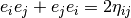, where  is a numeric
array are available in Maple and Mathematica. The symbolic algebra module,
GA, developed for python does not depend on an orthogonal basis
representation, but rather is generated from a set of
is a numeric
array are available in Maple and Mathematica. The symbolic algebra module,
GA, developed for python does not depend on an orthogonal basis
representation, but rather is generated from a set of  arbitrary
symbolic vectors, 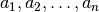 and a symbolic metric
tensor
arbitrary
symbolic vectors, 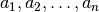 and a symbolic metric
tensor  .
.
In order not to reinvent the wheel all scalar symbolic algebra is handled by the python module sympy.
The basic geometic algebra operations will be implemented in python by defining a multivector class, MV, and overloading the python operators in Table 1 where A and B are any two multivectors (In the case of +, -, *, ^, |, <<, and >> the operation is also defined if A or B is a sympy symbol or a sympy real number).
Operation |
Result |
|---|---|
A+B |
sum of multivectors |
A-B |
difference of multivectors |
A*B |
geometric product |
A^B |
outer product of multivectors |
A|B |
inner product of multivectors |
A<B or A<<B |
left contraction of multivectors |
A>B or A>>B |
right contraction of multivectors |
Table 1. Multivector operations for symbolicGA
The option to use < or << for left contraction and > or >> is given since the < and > operators do not have r-forms (there are no __rlt__() and __rlt__() functions to overload) while << and >> do have r-forms so that x << A and x >> A are allowed where x is a scalar (symbol or integer) and A is a multivector. With < and > we can only have mixed modes (scalars and multivectors) if the multivector is the first operand.
Note
Except for < and > all the multivector operators have r-forms so that as long as one of the operands, left or right, is a multivector the other can be a multivector or a scalar (sympy symbol or integer).
Warning
Note that the operator order precedence is determined by python and is not neccessarily that used by geometric algebra. It is absolutely essential to use parenthesis in multivector expressions containing ^, |, <, >, << and/or >>. As an example let A and B be any two multivectors. Then A + A*B = A +(A*B), but A+A^B = (2*A)^B since in python the ^ operator has a lower precedence than the ‘+’ operator. In geometric algebra the outer and inner products and the left and right contractions have a higher precedence than the geometric product and the geometric product has a higher precedence than addition and subtraction. In python the ^, |, <, >, << and >> all have a lower precedence than + and - while * has a higher precedence than + and -.
Vector Basis and Metric¶
The two structures that define the MV (multivector) class are the symbolic basis vectors and the symbolic metric. The symbolic basis vectors are input as a string with the symbol name separated by spaces. For example if we are calculating the geometric algebra of a system with three vectors that we wish to denote as a0, a1, and a2 we would define the string variable:
basis = 'a0 a1 a2'
that would be input into the multivector setup function. The next step would be to define the symbolic metric for the geometric algebra of the basis we have defined. The default metric is the most general and is the matrix of the following symbols
(1)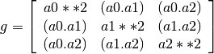
where each of the  is a symbol representing all of the dot
products of the basis vectors. Note that the symbols are named so that
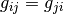 since for the symbol function
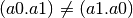.
is a symbol representing all of the dot
products of the basis vectors. Note that the symbols are named so that
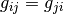 since for the symbol function
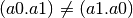.
Note that the strings shown in equation 1 are only used when the values
of are output (printed). In the GA module (library)
the symbols are stored in a static member list of the multivector
class MV as the double list MV.metric ( = MV.metric[i][j]).
The default definition of  can be overwritten by specifying a string
that will define . As an example consider a symbolic representation
for conformal geometry. Define for a basis
can be overwritten by specifying a string
that will define . As an example consider a symbolic representation
for conformal geometry. Define for a basis
basis = 'a0 a1 a2 n nbar'
and for a metric
metric = '# # # 0 0, # # # 0 0, # # # 0 0, 0 0 0 0 2, 0 0 0 2 0'
then calling  would initialize
would initialize
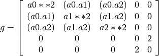
Here we have specified that and  are orthonal to all the
‘s,
are orthonal to all the
‘s,  , and
, and  . Using
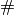 in the metric definition string just tells the program to use the
default symbol for that value.
. Using
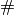 in the metric definition string just tells the program to use the
default symbol for that value.
When MV.setup is called multivector representations of the basis local to the program are instantiated. For our first example that means that the symbolic vectors named a0, a1, and a2 are created and made available to the programmer for future calculations.
In addition to the basis vectors the are also made available to
the programer with the following convention. If a0 and a1 are basis
vectors, then their dot products are denoted by a0sq, a2sq, and
a0dota1 for use as python program varibles. If you print a0sq the
output would be a0**2 and the output for a0dota1 would be (a0.a1) as
shown in equation 1. If the default value are overridden the new
values are output by print. For examle if  then “print
a0sq” would output “0.”
then “print
a0sq” would output “0.”
More generally, if metric is not a string, but a list of lists or a two
dimension numpy array, it is assumed that each element of metric is symbolic
variable so that the could be defined as symbolic functions as
well as variables. For example instead of letting  we
could have 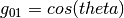 where we use a symbolic
we
could have 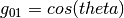 where we use a symbolic  function.
function.
Note
Additionally MV.setup has an option for an othogonal basis where the signature of the metric space is defined by a string. For example if the signature of the vector space is 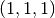 (Euclidian 3-space) set
metric = '[1,1,1]'
Likewise if the signature is that of spacetime, 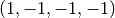 then define
metric = '[1,-1,-1,-1]'.
Representation and Reduction of Multivector Bases¶
In our symbolic geometric algebra we assume that all multivectors of interest to
us can be obtained from the symbolic basis vectors we have input, via the
different operations available to geometric algebra. The first problem we have
is representing the general multivector in terms terms of the basis vectors. To
do this we form the ordered geometric products of the basis vectors and develop
an internal representation of these products in terms of python classes. The
ordered geometric products are all multivectors of the form
 where
where  and
and  . We call these multivectors bases and represent them
internally with the list of integers
. We call these multivectors bases and represent them
internally with the list of integers
 . The bases are labeled, for the
purpose of output display, with strings that are concatenations of the strings
representing the basis vectors. So that in our example [1,2] would be
labeled with the string 'a1a2' and represents the geometric product
a1*a2. Thus the list [0,1,2] represents a0*a1*a2.For our example the
complete set of bases and labels are shown in Table 2
. The bases are labeled, for the
purpose of output display, with strings that are concatenations of the strings
representing the basis vectors. So that in our example [1,2] would be
labeled with the string 'a1a2' and represents the geometric product
a1*a2. Thus the list [0,1,2] represents a0*a1*a2.For our example the
complete set of bases and labels are shown in Table 2
Note
The empty list, [], represents the scalar 1.
MV.basislabel = ['1', ['a0', 'a1', 'a2'], ['a0a1', 'a0a2', 'a1a2'],
['a0a1a2']]
MV.basis = [[], [[0], [1], [2]], [[0, 1], [0, 2], [1, 2]],
[[0, 1, 2]]]
Table 2. Multivector basis labels and internal basis representation.
Since there are  bases and the number of bases with equal list
lengths is the same as for the grade decomposition of a dimension
geometric algebra we will call the collections of bases of equal length
psuedogrades.
bases and the number of bases with equal list
lengths is the same as for the grade decomposition of a dimension
geometric algebra we will call the collections of bases of equal length
psuedogrades.
The critical operation in setting up the geometric algebra module is reducing
the geomertric product of any two bases to a linear combination of bases so that
we can calculate a multiplication table for the bases. First we represent the
product as the concatenation of two base lists. For example a1a2*a0a1 is
represented by the list [1,2]+[0,1] = [1,2,0,1]. The representation of the
product is reduced via two operations, contraction and revision. The state of
the reduction is saved in two lists of equal length. The first list contains
symbolic scale factors (symbol or numeric types) for the corresponding interger
list representing the product of bases. If we wish to reduce
 the starting point is the coefficient list
the starting point is the coefficient list
 and the bases list
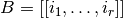. We now operate on each
element of the lists as follows:
and the bases list
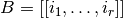. We now operate on each
element of the lists as follows:
- contraction: Consider a basis list
 with element
with element
![B[j] = \lbrk i_{1},\dots,i_{l},i_{l+1},\dots,i_{s}\rbrk](../../../_images/math/932a5a5c716296ff17dc0d7756bfb17efa67cbca.png) where
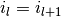. Then the product of the
where
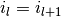. Then the product of the  and 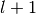 terms
result in a scalar and
and 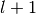 terms
result in a scalar and ![B[j]](../../../_images/math/cbc43348e3e0b54df5c8ed3f65656ac97436481b.png) is replaced by the new list representation
is replaced by the new list representation
 which is of psuedo
grade 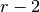 and
which is of psuedo
grade 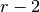 and ![C[j]](../../../_images/math/223d14d2079ca07087b5873cd96027f437c0266c.png) is replaced by the symbol
is replaced by the symbol
![g_{i_{l}i_{l}}C[j]](../../../_images/math/9da3bcd302310c8da9c23e72e82f7da1e80af965.png) .
. - revision: Consider a basis list with element
where
 . Then the and elements must be
reversed to be put in normal order, but we have
. Then the and elements must be
reversed to be put in normal order, but we have  (From the geometric algebra definition of the dot product of two vectors). Thus
we append the list representing the reduced element,
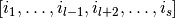, to the pseudo bases
list, , and append
(From the geometric algebra definition of the dot product of two vectors). Thus
we append the list representing the reduced element,
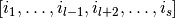, to the pseudo bases
list, , and append ![2g_{i{l}i_{l+1}}C[j]](../../../_images/math/a84d9059ce6161b02f47651c9a3d223db11f1e2a.png) to the coefficients
list, then we replace with
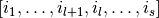 and with
to the coefficients
list, then we replace with
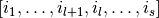 and with
![-C[j]](../../../_images/math/a6dc6db244674ebdb7b15188d454ad94b56435ac.png) . Both lists are increased by one element if
. Both lists are increased by one element if
 .
.
These processes are repeated untill every basis list in is in normal
(ascending) order with no repeated elements. Then the coefficents of equivalent
bases are summed and the bases sorted according to psuedograde and ascending
order. We now have a way of calculating the geometric product of any two bases
as a symbolic linear combination of all the bases with the coefficients
determined by . The base multiplication table for our simple example of
three vectors is given by (the coefficient of each psuedo base is enclosed with
{} for clarity):
(1)(1) = 1
(1)(a0) = a0
(1)(a1) = a1
(1)(a2) = a2
(1)(a0a1) = a0a1
(1)(a0a2) = a0a2
(1)(a1a2) = a1a2
(1)(a0a1a2) = a0a1a2
(a0)(1) = a0
(a0)(a0) = {a0**2}1
(a0)(a1) = a0a1
(a0)(a2) = a0a2
(a0)(a0a1) = {a0**2}a1
(a0)(a0a2) = {a0**2}a2
(a0)(a1a2) = a0a1a2
(a0)(a0a1a2) = {a0**2}a1a2
(a1)(1) = a1
(a1)(a0) = {2*(a0.a1)}1-a0a1
(a1)(a1) = {a1**2}1
(a1)(a2) = a1a2
(a1)(a0a1) = {-a1**2}a0+{2*(a0.a1)}a1
(a1)(a0a2) = {2*(a0.a1)}a2-a0a1a2
(a1)(a1a2) = {a1**2}a2
(a1)(a0a1a2) = {-a1**2}a0a2+{2*(a0.a1)}a1a2
(a2)(1) = a2
(a2)(a0) = {2*(a0.a2)}1-a0a2
(a2)(a1) = {2*(a1.a2)}1-a1a2
(a2)(a2) = {a2**2}1
(a2)(a0a1) = {-2*(a1.a2)}a0+{2*(a0.a2)}a1+a0a1a2
(a2)(a0a2) = {-a2**2}a0+{2*(a0.a2)}a2
(a2)(a1a2) = {-a2**2}a1+{2*(a1.a2)}a2
(a2)(a0a1a2) = {a2**2}a0a1+{-2*(a1.a2)}a0a2+{2*(a0.a2)}a1a2
(a0a1)(1) = a0a1
(a0a1)(a0) = {2*(a0.a1)}a0+{-a0**2}a1
(a0a1)(a1) = {a1**2}a0
(a0a1)(a2) = a0a1a2
(a0a1)(a0a1) = {-a0**2*a1**2}1+{2*(a0.a1)}a0a1
(a0a1)(a0a2) = {2*(a0.a1)}a0a2+{-a0**2}a1a2
(a0a1)(a1a2) = {a1**2}a0a2
(a0a1)(a0a1a2) = {-a0**2*a1**2}a2+{2*(a0.a1)}a0a1a2
(a0a2)(1) = a0a2
(a0a2)(a0) = {2*(a0.a2)}a0+{-a0**2}a2
(a0a2)(a1) = {2*(a1.a2)}a0-a0a1a2
(a0a2)(a2) = {a2**2}a0
(a0a2)(a0a1) = {-2*a0**2*(a1.a2)}1+{2*(a0.a2)}a0a1+{a0**2}a1a2
(a0a2)(a0a2) = {-a0**2*a2**2}1+{2*(a0.a2)}a0a2
(a0a2)(a1a2) = {-a2**2}a0a1+{2*(a1.a2)}a0a2
(a0a2)(a0a1a2) = {a0**2*a2**2}a1+{-2*a0**2*(a1.a2)}a2+{2*(a0.a2)}a0a1a2
(a1a2)(1) = a1a2
(a1a2)(a0) = {2*(a0.a2)}a1+{-2*(a0.a1)}a2+a0a1a2
(a1a2)(a1) = {2*(a1.a2)}a1+{-a1**2}a2
(a1a2)(a2) = {a2**2}a1
(a1a2)(a0a1) = {2*a1**2*(a0.a2)-4*(a0.a1)*(a1.a2)}1+{2*(a1.a2)}a0a1+{-a1**2}a0a2
+{2*(a0.a1)}a1a2
(a1a2)(a0a2) = {-2*a2**2*(a0.a1)}1+{a2**2}a0a1+{2*(a0.a2)}a1a2
(a1a2)(a1a2) = {-a1**2*a2**2}1+{2*(a1.a2)}a1a2
(a1a2)(a0a1a2) = {-a1**2*a2**2}a0+{2*a2**2*(a0.a1)}a1+{2*a1**2*(a0.a2)
-4*(a0.a1)*(a1.a2)}a2+{2*(a1.a2)}a0a1a2
(a0a1a2)(1) = a0a1a2
(a0a1a2)(a0) = {2*(a0.a2)}a0a1+{-2*(a0.a1)}a0a2+{a0**2}a1a2
(a0a1a2)(a1) = {2*(a1.a2)}a0a1+{-a1**2}a0a2
(a0a1a2)(a2) = {a2**2}a0a1
(a0a1a2)(a0a1) = {2*a1**2*(a0.a2)-4*(a0.a1)*(a1.a2)}a0+{2*a0**2*(a1.a2)}a1
+{-a0**2*a1**2}a2+{2*(a0.a1)}a0a1a2
(a0a1a2)(a0a2) = {-2*a2**2*(a0.a1)}a0+{a0**2*a2**2}a1+{2*(a0.a2)}a0a1a2
(a0a1a2)(a1a2) = {-a1**2*a2**2}a0+{2*(a1.a2)}a0a1a2
(a0a1a2)(a0a1a2) = {-a0**2*a1**2*a2**2}1+{2*a2**2*(a0.a1)}a0a1+{2*a1**2*(a0.a2)
-4*(a0.a1)*(a1.a2)}a0a2+{2*a0**2*(a1.a2)}a1a2
Base Representation of Multivectors¶
In terms of the bases defined an arbitrary multivector can be represented as a
list of arrays (we use the numpy python module to implement arrays). If we
have basis vectors we initialize the list self.mv = [0,0,...,0]
with  integers all zero. Each zero is a placeholder for an array of
python objects (in this case the objects will be sympy symbol objects). If
self.mv[r] = numpy.array([list of symbol objects]) each entry in the
numpy.array will be a coefficient of the corresponding psuedo base.
self.mv[r] = 0 indicates that the coefficients of every base of psuedo grade
integers all zero. Each zero is a placeholder for an array of
python objects (in this case the objects will be sympy symbol objects). If
self.mv[r] = numpy.array([list of symbol objects]) each entry in the
numpy.array will be a coefficient of the corresponding psuedo base.
self.mv[r] = 0 indicates that the coefficients of every base of psuedo grade
 are 0. The length of the array self.mv[r] is 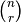
the binomial coefficient. For example the psuedo basis vector a1 would be
represented as a multivector by the list:
are 0. The length of the array self.mv[r] is 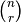
the binomial coefficient. For example the psuedo basis vector a1 would be
represented as a multivector by the list:
a1.mv = [0,numpy.array([numeric(0),numeric(1),numeric(0)]),0,0]
and a0a1a2 by:
a0a1a2.mv = [0,0,0,numpy.array([numeric(1)])]
The array is stuffed with sympy numeric objects instead of python integers so that we can perform symbolically manipulate sympy expressions that consist of scalar algebraic symbols and exact rational numbers which sympy can also represent.
The numpy.array is used because operations of addition, substraction, and multiplication by an object are defined for the array if they are defined for the objects making up the array, which they are by sympy. We call this representation a base type because the r index is not a grade index since the bases we are using are not blades. In a blade representation the structure would be identical, but the bases would be replaced by blades and self.mv[r] would represent the r grade components of the multivector. The first use of the base representation is to store the results of the multiplication tabel for the bases in the class variable MV.mtabel. This variable is a group of nested lists so that the geometric product of the igrade and ibase with the jgrade and jbase is MV.mtabel[igrade][ibase][jgrade][jbase]. We can then use this table to calculate the geometric product of any two multivectors.
Blade Representation of Multivectors¶
Since we can now calculate the symbolic geometric product of any two multivectors we can also calculate the blades corresponding to the product of the symbolic basis vectors using the formula
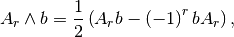
where  is a multivector of grade and is a
vector. For our example basis the result is shown in Table 3.
is a multivector of grade and is a
vector. For our example basis the result is shown in Table 3.
1 = 1
a0 = a0
a1 = a1
a2 = a2
a0^a1 = {-(a0.a1)}1+a0a1
a0^a2 = {-(a0.a2)}1+a0a2
a1^a2 = {-(a1.a2)}1+a1a2
a0^a1^a2 = {-(a1.a2)}a0+{(a0.a2)}a1+{-(a0.a1)}a2+a0a1a2
Table 3. Bases blades in terms of bases.
The important thing to notice about Table 3 is that it is a triagonal (lower triangular) system of equations so that using a simple back substitution algorithym we can solve for the psuedo bases in terms of the blades giving Table 4.
1 = 1
a0 = a0
a1 = a1
a2 = a2
a0a1 = {(a0.a1)}1+a0^a1
a0a2 = {(a0.a2)}1+a0^a2
a1a2 = {(a1.a2)}1+a1^a2
a0a1a2 = {(a1.a2)}a0+{-(a0.a2)}a1+{(a0.a1)}a2+a0^a1^a2
Table 4. Bases in terms of basis blades.
Using Table 4 and simple substitution we can convert from a base multivector representation to a blade representation. Likewise, using Table 3 we can convert from blades to bases.
Using the blade representation it becomes simple to program functions that will calculate the grade projection, reverse, even, and odd multivector functions.
Note that in the multivector class MV there is a class variable for each instantiation, self.bladeflg, that is set to zero for a base representation and 1 for a blade representation. One needs to keep track of which representation is in use since various multivector operations require conversion from one representation to the other.
Warning
When the geometric product of two multivectors is calculated the module looks to see if either multivector is in blade representation. If either is the result of the geometric product is converted to a blade representation. One result of this is that if either of the multivectors is a simple vector (which is automatically a blade) the result will be in a blade representation. If a and b are vectors then the result a*b will be (a.b)+a^b or simply a^b if (a.b) = 0.
Outer and Inner Products, Left and Right Contractions¶
In geometric algebra any general multivector  can be decomposed into
pure grade multivectors (a linear combination of blades of all the same order)
so that in a -dimensional vector space
can be decomposed into
pure grade multivectors (a linear combination of blades of all the same order)
so that in a -dimensional vector space
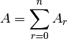
The geometric product of two pure grade multivectors and
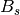 has the form
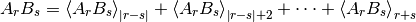
where 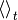 projects the  grade components of the
multivector argument. The inner and outer products of and
are then defined to be
grade components of the
multivector argument. The inner and outer products of and
are then defined to be
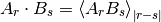
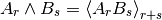
and

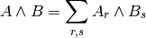
Likewise the right () and left ( ) contractions are defined as
) contractions are defined as

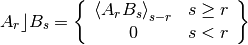
and
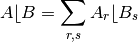
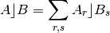
The MV class function for the outer product of the multivectors mv1 and mv2 is
@staticmethod
def outer_product(mv1,mv2):
product = MV()
product.bladeflg = 1
mv1.convert_to_blades()
mv2.convert_to_blades()
for igrade1 in MV.n1rg:
if not isint(mv1.mv[igrade1]):
pg1 = mv1.project(igrade1)
for igrade2 in MV.n1rg:
igrade = igrade1+igrade2
if igrade <= MV.n:
if not isint(mv2.mv[igrade2]):
pg2 = mv2.project(igrade2)
pg1pg2 = pg1*pg2
product.add_in_place(pg1pg2.project(igrade))
return(product)
The steps for calculating the outer product are:
- Convert mv1 and mv2 to blade representation if they are not already in that form.
- Project and loop through each grade mv1.mv[i1] and mv2.mv[i2].
- Calculate the geometric product pg1*pg2.
- Project the i1+i2 grade from pg1*pg2.
- Accumulate the results for each pair of grades in the input multivectors.
Warning
In the MV class we have overloaded the ^ operator to represent the outer product so that instead of calling the outer product function we can write mv1^ mv2. Due to the precedence rules for python it is absolutely essential to enclose outer products in parenthesis.
For the inner product of the multivectors mv1 and mv2 the MV class function is
@staticmethod
def inner_product(mv1,mv2,mode='s'):
"""
MV.inner_product(mv1,mv2) calculates the inner
mode = 's' - symmetic (Doran & Lasenby)
mode = 'l' - left contraction (Dorst)
mode = 'r' - right contraction (Dorst)
"""
if isinstance(mv1,MV) and isinstance(mv2,MV):
product = MV()
product.bladeflg = 1
mv1.convert_to_blades()
mv2.convert_to_blades()
for igrade1 in range(MV.n1):
if isinstance(mv1.mv[igrade1],numpy.ndarray):
pg1 = mv1.project(igrade1)
for igrade2 in range(MV.n1):
igrade = igrade1-igrade2
if mode == 's':
igrade = igrade.__abs__()
else:
if mode == 'l':
igrade = -igrade
if igrade >= 0:
if isinstance(mv2.mv[igrade2],numpy.ndarray):
pg2 = mv2.project(igrade2)
pg1pg2 = pg1*pg2
product.add_in_place(pg1pg2.project(igrade))
return(product)
else:
if mode == 's':
if isinstance(mv1,MV):
product = mv1.scalar_mul(mv2)
if isinstance(mv2,MV):
product = mv2.scalar_mul(mv1)
else:
product = None
return(product)
The inner product is calculated the same way as the outer product except that in step 4, i1+i2 is replaced by abs(i1-i2) or i1-i2 for the right contraction or i2-i1 for the left contraction. If i1-i2 is less than zero there is no contribution to the right contraction. If i2-i1 is less than zero there is no contribution to the left contraction.
Warning
In the MV class we have overloaded the | operator for the inner product, > operator for the right contraction, and < operator for the left contraction. Instead of calling the inner product function we can write mv1|mv2, mv1>mv2, or mv1<mv2 respectively for the inner product, right contraction, or left contraction. Again, due to the precedence rules for python it is absolutely essential to enclose inner products and/or contractions in parenthesis.
Reverse of Multivector¶
If is the geometric product of vectors
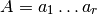
then the reverse of designated  is defined by
is defined by
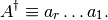
The reverse is simply the product with the order of terms reversed. The reverse of a sum of products is defined as the sum of the reverses so that for a general multivector A we have
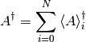
but
(2)
which is proved by expanding the blade bases in terms of orthogonal vectors and showing that equation 2 holds for the geometric product of orthogonal vectors.
The reverse is important in the theory of rotations in -dimensions. If
 is the product of an even number of vectors and
is the product of an even number of vectors and  then 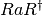 is a composition of rotations of the vector .
If is the product of two vectors then the plane that defines
is the plane of the rotation. That is to say that rotates the
component of that is projected into the plane defined by and
where
then 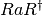 is a composition of rotations of the vector .
If is the product of two vectors then the plane that defines
is the plane of the rotation. That is to say that rotates the
component of that is projected into the plane defined by and
where  . may be written
. may be written
 , where
, where  is the angle of rotation
and
is the angle of rotation
and  is a unit blade 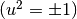 that defines the
plane of rotation.
is a unit blade 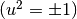 that defines the
plane of rotation.
Reciprocal Frames¶
If we have  linearly independent vectors (a frame),
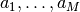, then the reciprocal frame is
linearly independent vectors (a frame),
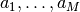, then the reciprocal frame is
 where 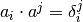,
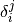 is the Kronecker delta (zero if
where 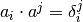,
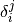 is the Kronecker delta (zero if  and one
if
and one
if  ). The reciprocal frame is constructed as follows:
). The reciprocal frame is constructed as follows:
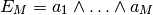

Then
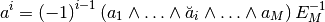
where 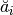 indicates that  is to be deleted from
the product. In the standard notation if a vector is denoted with a subscript
the reciprocal vector is denoted with a superscript. The multivector setup
function MV.setup(basis,metric,rframe) has the argument rframe with a
default value of False. If it is set to True the reciprocal frame of
the basis vectors is calculated. Additionaly there is the function
reciprocal_frame(vlst,names='') external to the MV class that will
calculate the reciprocal frame of a list, vlst, of vectors. If the argument
names is set to a space delimited string of names for the vectors the
reciprocal vectors will be given these names.
is to be deleted from
the product. In the standard notation if a vector is denoted with a subscript
the reciprocal vector is denoted with a superscript. The multivector setup
function MV.setup(basis,metric,rframe) has the argument rframe with a
default value of False. If it is set to True the reciprocal frame of
the basis vectors is calculated. Additionaly there is the function
reciprocal_frame(vlst,names='') external to the MV class that will
calculate the reciprocal frame of a list, vlst, of vectors. If the argument
names is set to a space delimited string of names for the vectors the
reciprocal vectors will be given these names.
Geometric Derivative¶
If  is a multivector field that is a function of a vector
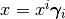 (we are using the summation convention that
pairs of subscripts and superscripts are summed over the dimension of the vector
space) then the geometric derivative
is a multivector field that is a function of a vector
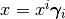 (we are using the summation convention that
pairs of subscripts and superscripts are summed over the dimension of the vector
space) then the geometric derivative  is given by (in this
section the summation convention is used):
is given by (in this
section the summation convention is used):

If  is a grade- multivector and
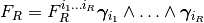
then
is a grade- multivector and
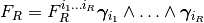
then

Note that
 can only contain grades 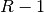 and
can only contain grades 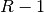 and  so that
so that  also can only contain those grades. For a grade- multivector
the inner (div) and outer (curl) derivatives are defined as
also can only contain those grades. For a grade- multivector
the inner (div) and outer (curl) derivatives are defined as
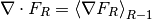
and
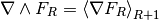
For a general multivector function the inner and outer derivatives are
just the sum of the inner and outer dervatives of each grade of the multivector
function.
Curvilinear coordinates are derived from a vector function
 where
where
 where the number of
coordinates is equal to the dimension of the vector space. In the case of
3-dimensional spherical coordinates 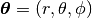
and the coordinate generating function is
where the number of
coordinates is equal to the dimension of the vector space. In the case of
3-dimensional spherical coordinates 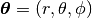
and the coordinate generating function is

A coordinate frame is derived from  by
by
 . The following show the frame for
spherical coordinates.
. The following show the frame for
spherical coordinates.
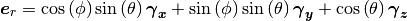
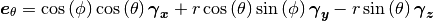

The coordinate frame generated in this manner is not necessarily normalized so define a normalized frame by
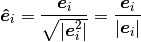
This works for all 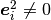 since we have defined
 . For spherical
coordinates the normalized frame vectors are
. For spherical
coordinates the normalized frame vectors are
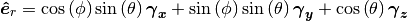

The geometric derivative in curvilinear coordinates is given by
![\begin{align*}
\nabla F_{R} & = \bm{\gamma}^{i}\pdiff{}{x^{i}}\lp F_{R}^{i_{1}\dots i_{R}}
\bm{\hat{e}}_{i_{1}}\W\dots\W\bm{\hat{e}}_{i_{R}}\rp \\
& = \bm{e^{j}}\pdiff{}{\theta^{j}}\lp F_{R}^{i_{1}\dots i_{R}}
\bm{\hat{e}}_{i_{1}}\W\dots\W\bm{\hat{e}}_{i_{R}}\rp \\
& = \lp\pdiff{}{\theta^{j}} F_{R}^{i_{1}\dots i_{R}}\rp
\bm{e^{j}}\lp\bm{\hat{e}}_{i_{1}}\W\dots\W\bm{\hat{e}}_{i_{R}}\rp+
F_{R}^{i_{1}\dots i_{R}}\bm{e^{j}}
\pdiff{}{\theta^{j}}\lp\bm{\hat{e}}_{i_{1}}\W\dots\W\bm{\hat{e}}_{i_{R}}\rp \\
& = \lp\pdiff{}{\theta^{j}} F_{R}^{i_{1}\dots i_{R}}\rp
\bm{e^{j}}\lp\bm{\hat{e}}_{i_{1}}\W\dots\W\bm{\hat{e}}_{i_{R}}\rp+
F_{R}^{i_{1}\dots i_{R}}C\lbrc \bm{\hat{e}}_{i_{1}}\W\dots\W\bm{\hat{e}}_{i_{R}}\rbrc
\end{align*}](../../../_images/math/9ba94d03be13bd4543c895cbec02b451ad16065e.png)
where
are the connection multivectors for the curvilinear coordinate system. For a spherical coordinate system they are


Module Components¶
Initializing Multivector Class¶
The multivector class is initialized with:
- MV.setup(basis, metric='', rframe=False, coords=None, debug=False, offset=0)¶
The basis and metric parameters were described in section Vector Basis and Metric. If rframe=True the reciprocal frame of the symbolic bases vectors is calculated. If debug=True the data structure required to initialize the MV class are printer out. coords is a list of sympy symbols equal in length to the number of basis vectors. These symbols are used as the arguments of a multivector field as a function of position and for calculating the derivatives of a multivector field (if coords is defined then rframe is automatically set equal to True). offset is an integer that is added to the multivector coefficient index. For example if one wishes to start labeling vector coefficient indexes at one instead of zero then set offset=1. Additionally, MV.setup() calculates the pseudo scalar,
 and its inverse, and makes
them available to the programmer as MV.I and MV.Iinv.
and its inverse, and makes
them available to the programmer as MV.I and MV.Iinv.
After MV.setup() is run one can reinialize the MV class with curvilinear coordinates using:
- MV.rebase(x, coords, base_name, debug=False, debug_level=0)¶
A typical usage of MV.rebase for generating spherical curvilinear coordinate is:
metric = '1 0 0,0 1 0,0 0 1' MV.setup('gamma_x gamma_y gamma_z',metric,True) coords = make_symbols('r theta phi') x = r*(sympy.cos(theta)*gamma_z+sympy.sin(theta)*\ (sympy.cos(phi)*gamma_x+sympy.sin(phi)*gamma_y)) x.set_name('x') MV.rebase(x,coords,'e',True)
The input parameters for MV.rebase are
x: Vector function of coordinates (derivatives define curvilinear basis)
coords: List of sympy symbols for curvilinear coordinates
debug: If True printout (LaTeX) all quantities required for derivative calculation
debug_level: Set to 0,1,2, or 3 to stop curvilinear calculation before all quatities are calculated. This is done when debugging new curvilinear coordinate systems since simplification of expressions is not sufficiently automated to insure success of process of any coordinate system defined by vector function x
To date MV.rebase works for cylindrical and spherical coordinate systems in any number of dimensions (until the execution time becomes too long). To make it work for these systems required creating some hacks for expression simplification since both trigsimp and simplify were not general enough to perform the required simplification.
- MV.set_str_format(str_mode=0)¶
If str_mode=0 the string representation of the multivector contains no newline characters (prints on one line). If str_mode=1 the string representation of the multivector places a newline after each grade of the multivector (prints one grade per line). If str_mode=2 the string representation of the multivector places a newline after each base of the multivector (prints one base per line). In both cases bases with zero coefficients are not printed.
Note
This function directly affects the way multivectors are printed with the print command since it interacts with the __str__() function for the multivector class which is used by the print command.
str_mode
Effect on print
0
One multivector per line 1
One grade per line 2
One base per line
Instantiating a Multivector¶
Now that grades and bases have been described we can show all the ways that a multivector can be instantiated. As an example assume that the multivector space is initialized with MV.setup('e1 e2 e3'). Then the vectors e1, e2, and e3 are made available (broadcast) for use in the program .
Warning
This is only true if the statement set_main(sys.modules[__name__]) appears immediately after the from sympy.galgebra.GA import * statement.
So that multivectors could be instantiated with statements such as (a1, a2, and a3 are sympy symbols):
x = a1*e1+a2*e2+a3*e3
y = x*e1*e2
z = x|y
w = x^y
or with the multivector class constructor:
- class MV(value='', mvtype='', mvname='', fct=False)¶
mvname is a string that defines the name of the multivector for output purposes. value and type are defined by the following table and fct is a switch that will convert the symbolic coefficients of a multivector to functions if coordinate variables have been defined when MV.setup() is called:
mvtype
value
result
default
default
Zero multivector
‘basisvector’
int i
 basis vector
basis vector‘basisbivector’
int i
basis bivector‘scalar’
symbol x
symbolic scalar of value x
string s
symbolic scalar of value Symbol(s)
int i
sympy integer of value i
‘grade’
[int r, 1-D symbol array A]
X.grade(r) = A
[int r, string s]
symbolic grade r multivector
‘vector’
1-D symbol array A
X.grade(1) = A
string s
symbolic vector
‘grade2’
1-D symbol array A
X.grade(2) = A
‘pseudo’
symbol x
X.grade(n) = x
‘spinor’
string s
symbolic even multivector
default
string s
symbolic general multivector
If the value argument has the option of being a string s then a general symbolic multivector will be constructed constrained by the value of mvtype. The string s will be the base name of the multivector symbolic coefficients. If coords is not defined in MV.setup() the indices of the multivector bases are appended to the base name with a double underscore (superscript notation). If coords is defined the coordinate names will replace the indices in the coefficient names. For example if the base string is A and the coordinates (x,y,z) then the coefficients of a spinor in 3d space would be A, A__xy, A__xz, and A__yz. If the latex_ex is used to print the multivector the coefficients would print as
,  , , and
, , and  .
.If the fct argrument of MV() is set to True and the coords argument in MV.setup() is defined the symbolic coefficients of the multivector are functions of the coordinates.
Basic Multivector Class Functions¶
- __call__(self, igrade=0, ibase=0)¶
__call__ returns the the igrade, ibase coefficient of the multivector. The defaults return the scalar component of the multivector.
- convert_to_blades(self)¶
Convert multivector from the base representation to the blade representation. If multivector is already in blade representation nothing is done.
- convert_from_blades(self)¶
Convert multivector from the blade representation to the base representation. If multivector is already in base representation nothing is done.
- project(self, r)¶
If r is a integer return the grade-
components of the multivector. If
r is a multivector return the grades of the multivector that correspond to the
non-zero grades of r. For example if one is projecting a general multivector and
r is a spinor, A.project(r) will return only the even grades of the multivector
A since a spinor only has even grades that are non-zero.
- even(self)¶
Return the even grade components of the multivector.
- odd(self)¶
Return the odd grade components of the multivector.
- rev(self)¶
Return the reverse of the multivector. See section Reverse of Multivector.
- is_pure(self)¶
Return true if multivector is pure grade (all grades but one are zero).
- diff(self, x)¶
Return the partial derivative of the multivector function with respect to variable
.
- grad(self)¶
Return the geometric derivative of the multivector function.
- grad_ext(self)¶
Return the outer (curl) derivative of the multivector function. Equivalent to curl().
- grad_int(self)¶
Return the inner (div) derivative of the multivector function. Equivalent to div().
Warning
If A is a vector field in three dimensions  = A.grad_int() = A.div(), but
= A.grad_int() = A.div(), but
 = -MV.I*A.grad_ext() = -MV.I*A.curl(). Note that grad_int() lowers the grade
of all blades by one grade and grad_ext() raises the grade of all blades by one.
= -MV.I*A.grad_ext() = -MV.I*A.curl(). Note that grad_int() lowers the grade
of all blades by one grade and grad_ext() raises the grade of all blades by one.
- set_coef(self, grade, base, value)¶
Set the multivector coefficient of index (grade,base) to value.
Sympy Functions Applied Inplace to Multivector Coefficients¶
All the following fuctions belong to the MV class and apply the corresponding sympy function to each component of a multivector. All these functions perform the operations inplace (None is returned) on each coefficient. For example if you wished to simplify all the components of the multivector A you would invoke A.simplify(). The argument list for each function is the same as for the corresponding sympy function. The only function that differs in its action from the sympy version is trigsimp() in its case the function TrigSimp is applied (see documentation on TrigSimp()).
- collect(self, lst)¶
- sqrfree(self, lst)¶
- subs(self, *args)¶
- simplify(self)¶
- trigsimp(self)¶
- cancel(self)¶
- expand(self)¶
Helper Functions¶
These are functions in GA, but not in the multivector (MV) class.
- set_main(main_program)¶
set_main() passes the argument main_program from the main program to the GA module. The argument must be sys.modules[__name__] and the call should be placed immediately after sys and GA are imported. The purpose of this call is to allow GA to broadcast to the main program sympy variables and multivectors created by calls to GA. It is used by MV.setup() and make_symbols().
- make_symbols(symnamelst)¶
make_symbols() creates a list of sympy symbols with names defined by the space delimited string symnamelst. In addition to returning the symbol list the function broadcasts the named symbols to the main program. For example if you make the call:
syms = make_symbols('x y ab')
Not only will syms contain the symbols, but you can also directly use x, y, and ab as symbols in your program.
Warning
You can only directly use x, y, and ab as symbols in your program if the statement set_main(sys.modules[__name__]) appears immediately after the from sympy.galgebra.GA import * statement.
- set_names(var_lst, var_str)¶
set_names() allows one to name a list, var_lst, of multivectors enmass. The names are in var_str, a blank separated string of names. An error is generated if the number of name is not equal to the length of var_lst.
- reciprocal_frame(vlst, names='')¶
reciprocal_frame() implements the proceedure described in section Reciprocal Frames. vlst is a list of independent vectors that you wish the reciprocal frame calculated for. names is a blank separated string of names for the reciprocal vectors if names are required by you application. The function returns a list containing the reciprocal vectors.
- TrigSimp(f)¶
In general sympy.trigsimp() will not catch all the trigonometric simplifications in an sympy expression. Neither will TrigSimp(), but it will catch a lot more of them. TrigSimp() is so simple it is show below in its entirety. All it does is apply sympy.trigsimp() to the expressions generated by sympy.cse().
def TrigSimp(f): (w,g) = sympy.cse(f) g = sympy.trigsimp(g[0]) for sub in reversed(w): g = g.subs(sub[0],sub[1]) g = sympy.trigsimp(g) return(g)
- S(x)¶
S() instanciates a scaler multivector of value x, where x can be a sympy variable or integer. This is just a shorthand method for constructing scalar multivectors and can be used when there is any ambiguity in a multivector expression as to whether a symbol or constant should be treated as a scalar multivector or not.
Examples¶
Algebra¶
The following examples of geometric algebra (not calculus) are all in the file testsymbolicGA.py which is included in the sympy distribution examples under the galbebra directory. The section of code in the program for each example is show with the respective output following the code section.
Example Header¶
This is the header of testsymbolicGA.py that allows access to the required modules and also allow variables and certain multivectors to be broadcast from the GA module to the main program.
import os,sys,sympy
from sympy.galgebra.GA import set_main, make_symbols, types, MV, ZERO, ONE, HALF
from sympy import collect
set_main(sys.modules[__name__])
def F(x):
"""
Conformal Mapping Function
"""
Fx = HALF*((x*x)*n+2*x-nbar)
return(Fx)
def make_vector(a,n = 3):
if type(a) == types.StringType:
sym_str = ''
for i in range(n):
sym_str += a+str(i)+' '
sym_lst = make_symbols(sym_str)
sym_lst.append(ZERO)
sym_lst.append(ZERO)
a = MV(sym_lst,'vector')
return(F(a))
if __name__ == '__main__':
Basic Geometric Algebra Operations¶
Example of basic geometric algebra operation of geometric, outer, and inner products.
MV.setup('a b c d e')
MV.set_str_format(1)
print 'e|(a^b) =',e|(a^b)
print 'e|(a^b^c) =',e|(a^b^c)
print 'a*(b^c)-b*(a^c)+c*(a^b) =',a*(b^c)-b*(a^c)+c*(a^b)
print 'e|(a^b^c^d) =',e|(a^b^c^d)
print -d*(a^b^c)+c*(a^b^d)-b*(a^c^d)+a*(b^c^d)
print (a^b)|(c^d)
e|(a^b) = {-(b.e)}a
+{(a.e)}b
e|(a^b^c) = {(c.e)}a^b
+{-(b.e)}a^c
+{(a.e)}b^c
a*(b^c)-b*(a^c)+c*(a^b) = {3}a^b^c
e|(a^b^c^d) = {-(d.e)}a^b^c
+{(c.e)}a^b^d
+{-(b.e)}a^c^d
+{(a.e)}b^c^d
{4}a^b^c^d
{(a.d)*(b.c) - (a.c)*(b.d)}1
Examples of Conformal Geometry¶
Examples of comformal geometry [Lasenby,Chapter 10]. The examples show that basic geometric entities (lines, circles, planes, and spheres) in three dimensions can be represented by blades in a five dimensional (conformal) space.
print '\nExample: Conformal representations of circles, lines, spheres, and planes'
metric = '1 0 0 0 0,0 1 0 0 0,0 0 1 0 0,0 0 0 0 2,0 0 0 2 0'
MV.setup('e0 e1 e2 n nbar',metric,debug=0)
MV.set_str_format(1)
e = n+nbar
#conformal representation of points
A = make_vector(e0) # point a = (1,0,0) A = F(a)
B = make_vector(e1) # point b = (0,1,0) B = F(b)
C = make_vector(-1*e0) # point c = (-1,0,0) C = F(c)
D = make_vector(e2) # point d = (0,0,1) D = F(d)
X = make_vector('x',3)
print 'a = e0, b = e1, c = -e0, and d = e2'
print 'A = F(a) = 1/2*(a*a*n+2*a-nbar), etc.'
print 'Circle through a, b, and c'
print 'Circle: A^B^C^X = 0 =',(A^B^C^X)
print 'Line through a and b'
print 'Line : A^B^n^X = 0 =',(A^B^n^X)
print 'Sphere through a, b, c, and d'
print 'Sphere: A^B^C^D^X = 0 =',(A^B^C^D^X)
print 'Plane through a, b, and d'
print 'Plane : A^B^n^D^X = 0 =',(A^B^n^D^X)
Example: Conformal representations of circles, lines, spheres, and planes
a = e0, b = e1, c = -e0, and d = e2
A = F(a) = 1/2*(a*a*n+2*a-nbar), etc.
Circle through a, b, and c
Circle: A^B^C^X = 0 = {-x2}e0^e1^e2^n
+{x2}e0^e1^e2^nbar
+{-1/2 + 1/2*x0**2 + 1/2*x1**2 + 1/2*x2**2}e0^e1^n^nbar
Line through a and b
Line : A^B^n^X = 0 = {-x2}e0^e1^e2^n
+{-1/2 + x0/2 + x1/2}e0^e1^n^nbar
+{x2/2}e0^e2^n^nbar
+{-x2/2}e1^e2^n^nbar
Sphere through a, b, c, and d
Sphere: A^B^C^D^X = 0 = {1/2 - 1/2*x0**2 - 1/2*x1**2 - 1/2*x2**2}e0^e1^e2^n^nbar
Plane through a, b, and d
Plane : A^B^n^D^X = 0 = {1/2 - x0/2 - x1/2 - x2/2}e0^e1^e2^n^nbar
Calculation of Reciprocal Frame¶
Example shows the calculation of the reciprocal frame for three arbitrary vectors and verifies that the calculated reciprocal vectors have the correct properties.
MV.setup('e1 e2 e3',metric)
print 'Example: Reciprocal Frames e1, e2, and e3 unit vectors.\n\n'
E = e1^e2^e3
Esq = (E*E)()
print 'E =',E
print 'E^2 =',Esq
Esq_inv = 1/Esq
E1 = (e2^e3)*E
E2 = (-1)*(e1^e3)*E
E3 = (e1^e2)*E
print 'E1 = (e2^e3)*E =',E1
print 'E2 =-(e1^e3)*E =',E2
print 'E3 = (e1^e2)*E =',E3
w = (E1|e2)
w.collect(MV.g)
w = w().expand()
print 'E1|e2 =',w
w = (E1|e3)
w.collect(MV.g)
w = w().expand()
print 'E1|e3 =',w
w = (E2|e1)
w.collect(MV.g)
w = w().expand()
print 'E2|e1 =',w
w = (E2|e3)
w.collect(MV.g)
w = w().expand()
print 'E2|e3 =',w
w = (E3|e1)
w.collect(MV.g)
w = w().expand()
print 'E3|e1 =',w
w = (E3|e2)
w.collect(MV.g)
w = w().expand()
print 'E3|e2 =',w
w = (E1|e1)
w = w().expand()
Esq = Esq.expand()
print '(E1|e1)/E^2 =',w/Esq
w = (E2|e2)
w = w().expand()
print '(E2|e2)/E^2 =',w/Esq
w = (E3|e3)
w = w().expand()
print '(E3|e3)/E^2 =',w/Esq
Example: Reciprocal Frames e1, e2, and e3 unit vectors.
E = e1^e2^e3
E^2 = -1 - 2*(e1.e2)*(e1.e3)*(e2.e3) + (e1.e2)**2 + (e1.e3)**2 + (e2.e3)**2
E1 = (e2^e3)*E = {-1 + (e2.e3)**2}e1+{(e1.e2) - (e1.e3)*(e2.e3)}e2+{(e1.e3) - (e1.e2)*(e2.e3)}e3
E2 =-(e1^e3)*E = {(e1.e2) - (e1.e3)*(e2.e3)}e1+{-1 + (e1.e3)**2}e2+{(e2.e3) - (e1.e2)*(e1.e3)}e3
E3 = (e1^e2)*E = {(e1.e3) - (e1.e2)*(e2.e3)}e1+{(e2.e3) - (e1.e2)*(e1.e3)}e2+{-1 + (e1.e2)**2}e3
E1|e2 = 0
E1|e3 = 0
E2|e1 = 0
E2|e3 = 0
E3|e1 = 0
E3|e2 = 0
(E1|e1)/E^2 = 1
(E2|e2)/E^2 = 1
(E3|e3)/E^2 = 1
Hyperbolic Geometry¶
Examples of calculation of distance in hyperbolic geometry [Lasenby,pp373-375]. This is a good example of the utility of not restricting the basis vector to be orthogonal. Note that most of the calculation is simplifying a scalar expression.
print 'Example: non-euclidian distance calculation'
metric = '0 # #,# 0 #,# # 1'
MV.setup('X Y e',metric)
MV.set_str_format(1)
L = X^Y^e
B = L*e
Bsq = (B*B)()
print 'L = X^Y^e is a non-euclidian line'
print 'B = L*e =',B
BeBr =B*e*B.rev()
print 'B*e*B.rev() =',BeBr
print 'B^2 =',Bsq
print 'L^2 =',(L*L)()
make_symbols('s c Binv M S C alpha')
Bhat = Binv*B # Normalize translation generator
R = c+s*Bhat # Rotor R = exp(alpha*Bhat/2)
print 's = sinh(alpha/2) and c = cosh(alpha/2)'
print 'R = exp(alpha*B/(2*|B|)) =',R
Z = R*X*R.rev()
Z.expand()
Z.collect([Binv,s,c,XdotY])
print 'R*X*R.rev() =',Z
W = Z|Y
W.expand()
W.collect([s*Binv])
print '(R*X*rev(R)).Y =',W
M = 1/Bsq
W.subs(Binv**2,M)
W.simplify()
Bmag = sympy.sqrt(XdotY**2-2*XdotY*Xdote*Ydote)
W.collect([Binv*c*s,XdotY])
W.subs(2*XdotY**2-4*XdotY*Xdote*Ydote,2/(Binv**2))
W.subs(2*c*s,S)
W.subs(c**2,(C+1)/2)
W.subs(s**2,(C-1)/2)
W.simplify()
W.subs(1/Binv,Bmag)
W = W().expand()
print '(R*X*R.rev()).Y =',W
nl = '\n'
Wd = collect(W,[C,S],exact=True,evaluate=False)
print 'Wd =',Wd
Wd_1 = Wd[ONE]
Wd_C = Wd[C]
Wd_S = Wd[S]
print '|B| =',Bmag
Wd_1 = Wd_1.subs(Bmag,1/Binv)
Wd_C = Wd_C.subs(Bmag,1/Binv)
Wd_S = Wd_S.subs(Bmag,1/Binv)
print 'Wd[ONE] =',Wd_1
print 'Wd[C] =',Wd_C
print 'Wd[S] =',Wd_S
lhs = Wd_1+Wd_C*C
rhs = -Wd_S*S
lhs = lhs**2
rhs = rhs**2
W = (lhs-rhs).expand()
W = (W.subs(1/Binv**2,Bmag**2)).expand()
print 'W =',W
W = (W.subs(S**2,C**2-1)).expand()
print 'W =',W
W = collect(W,[C,C**2],evaluate=False)
print 'W =',W
a = W[C**2]
b = W[C]
c = W[ONE]
print 'a =',a
print 'b =',b
print 'c =',c
D = (b**2-4*a*c).expand()
print 'Setting to 0 and solving for C gives:'
print 'Descriminant D = b^2-4*a*c =',D
C = (-b/(2*a)).expand()
print 'C = cosh(alpha) = -b/(2*a) =',C
Example: non-euclidian distance calculation
L = X^Y^e is a non-euclidian line
B = L*e = X^Y
+{-(Y.e)}X^e
+{(X.e)}Y^e
B*e*B.rev() = {2*(X.Y)*(X.e)*(Y.e) - (X.Y)**2}e
B^2 = -2*(X.Y)*(X.e)*(Y.e) + (X.Y)**2
L^2 = -2*(X.Y)*(X.e)*(Y.e) + (X.Y)**2
s = sinh(alpha/2) and c = cosh(alpha/2)
R = exp(alpha*B/(2*|B|)) = {c}1
+{Binv*s}X^Y
+{-(Y.e)*Binv*s}X^e
+{(X.e)*Binv*s}Y^e
R*X*R.rev() = {Binv*(2*(X.Y)*c*s - 2*(X.e)*(Y.e)*c*s) + Binv**2*((X.Y)**2*s**2
- 2*(X.Y)*(X.e)*(Y.e)*s**2) + c**2}X
+{2*Binv*c*s*(X.e)**2}Y
+{Binv**2*(-2*(X.e)*(X.Y)**2*s**2 + 4*(X.Y)*(Y.e)*(X.e)**2*s**2)
- 2*(X.Y)*(X.e)*Binv*c*s}e
(R*X*rev(R)).Y = {Binv*s*(-4*(X.Y)*(X.e)*(Y.e)*c + 2*c*(X.Y)**2)
+ Binv**2*s**2*(-4*(X.e)*(Y.e)*(X.Y)**2 +
4*(X.Y)*(X.e)**2*(Y.e)**2 + (X.Y)**3) + (X.Y)*c**2}1
(R*X*R.rev()).Y = S*(-2*(X.Y)*(X.e)*(Y.e) + (X.Y)**2)**(1/2)
+ (X.Y)*Binv*C*(-2*(X.Y)*(X.e)*(Y.e) +
(X.Y)**2)**(1/2) + (X.e)*(Y.e)*Binv*(-2*(X.Y)*(X.e)*(Y.e)
+ (X.Y)**2)**(1/2) -
(X.e)*(Y.e)*Binv*C*(-2*(X.Y)*(X.e)*(Y.e) + (X.Y)**2)**(1/2)
Wd = {1: (X.e)*(Y.e)*Binv*(-2*(X.Y)*(X.e)*(Y.e) + (X.Y)**2)**(1/2),
S: (-2*(X.Y)*(X.e)*(Y.e) + (X.Y)**2)**(1/2),
C: (X.Y)*Binv*(-2*(X.Y)*(X.e)*(Y.e) + (X.Y)**2)**(1/2) -
(X.e)*(Y.e)*Binv*(-2*(X.Y)*(X.e)*(Y.e) + (X.Y)**2)**(1/2)}
|B| = (-2*(X.Y)*(X.e)*(Y.e) + (X.Y)**2)**(1/2)
Wd[ONE] = (X.e)*(Y.e)
Wd[C] = (X.Y) - (X.e)*(Y.e)
Wd[S] = 1/Binv
W = 2*(X.Y)*(X.e)*(Y.e)*C + (X.Y)**2*C**2 + (X.e)**2*(Y.e)**2
- (X.Y)**2*S**2 + (X.e)**2*(Y.e)**2*C**2 - 2*C*(X.e)**2*(Y.e)**2
- 2*(X.Y)*(X.e)*(Y.e)*C**2 + 2*(X.Y)*(X.e)*(Y.e)*S**2
W = -2*(X.Y)*(X.e)*(Y.e) + 2*(X.Y)*(X.e)*(Y.e)*C + (X.Y)**2
+ (X.e)**2*(Y.e)**2 + (X.e)**2*(Y.e)**2*C**2 -
2*C*(X.e)**2*(Y.e)**2
W = {1: -2*(X.Y)*(X.e)*(Y.e) + (X.Y)**2 + (X.e)**2*(Y.e)**2,
C**2: (X.e)**2*(Y.e)**2,
C: 2*(X.Y)*(X.e)*(Y.e) - 2*(X.e)**2*(Y.e)**2}
a = (X.e)**2*(Y.e)**2
b = 2*(X.Y)*(X.e)*(Y.e) - 2*(X.e)**2*(Y.e)**2
c = -2*(X.Y)*(X.e)*(Y.e) + (X.Y)**2 + (X.e)**2*(Y.e)**2
Setting to 0 and solving for C gives:
Descriminant D = b^2-4*a*c = 0
C = cosh(alpha) = -b/(2*a) = 1 - (X.Y)/((X.e)*(Y.e))
Calculus¶
The calculus examples all use the extened LaTeXoutput module, latex_ex, for clarity.
Maxwell’s Equations¶
In geometric calculus the equivalent of the electromagnetic tensor is
where a spacetime vector is given by
where  , the pseudoscalar
,
, the pseudoscalar
,  and
are four vectors where the time component is zero and the spatial components
equal to the electric and magnetic field components. Then Maxwell’s equations
can be all written as
and
are four vectors where the time component is zero and the spatial components
equal to the electric and magnetic field components. Then Maxwell’s equations
can be all written as  with
with  the four current.
This example shows that this equations generates all of Maxwell’s equations
correctly (in our units:math:
the four current.
This example shows that this equations generates all of Maxwell’s equations
correctly (in our units:math: ) [Lasenby,pp229-231].
) [Lasenby,pp229-231].
Begin Program Maxwell.py
from sympy import *
from sympy.galgebra.GA import *
from sympy.galgebra.latex_ex import *
set_main(sys.modules[__name__])
if __name__ == '__main__':
metric = '1 0 0 0,'+\
'0 -1 0 0,'+\
'0 0 -1 0,'+\
'0 0 0 -1'
vars = make_symbols('t x y z')
MV.setup('gamma_t gamma_x gamma_y gamma_z',metric,True,vars)
LatexPrinter.format(1,1,1,1)
I = MV(1,'pseudo')
print '$I$ Pseudo-Scalar'
print 'I =',I
B = MV('B','vector',fct=True)
E = MV('E','vector',fct=True)
B.set_coef(1,0,0)
E.set_coef(1,0,0)
B *= gamma_t
E *= gamma_t
J = MV('J','vector',fct=True)
F = E+I*B
print ' '
print '$B$ Magnetic Field Bi-Vector'
print 'B = Bvec gamma_0 =',B
print '$F$ Electric Field Bi-Vector'
print 'E = Evec gamma_0 =',E
print '$E+IB$ Electo-Magnetic Field Bi-Vector'
print 'F = E+IB =',F
print '$J$ Four Current'
print 'J =',J
gradF = F.grad()
print 'Geometric Derivative of Electo-Magnetic Field Bi-Vector'
MV_format(3)
print '\\nabla F =',gradF
print 'All Maxwell Equations are'
print '\\nabla F = J'
print 'Div $E$ and Curl $H$ Equations'
print '<\\nabla F>_1 -J =',gradF.project(1)-J,' = 0'
print 'Curl $E$ and Div $B$ equations'
print '<\\nabla F>_3 =',gradF.project(3),' = 0'
xdvi(filename='Maxwell.tex')
End Program Maxwell.py
Begin Program Output
Pseudo-Scalar

Magnetic Field Bi-Vector

Electric Field Bi-Vector

 Electo-Magnetic Field Bi-Vector
Electo-Magnetic Field Bi-Vector

Four Current
Geometric Derivative of Electo-Magnetic Field Bi-Vector
![\begin{align*}
\nabla F & = \left(\partial_{z} {E^{z}} + \partial_{y} {E^{y}} + \partial_{x} {E^{x}}\right){\gamma}_{t} \\ & + \left(-\partial_{t} {E^{x}} + \partial_{y} {B^{z}} -\partial_{z} {B^{y}}\right){\gamma}_{x} \\ & + \left(\partial_{z} {B^{x}} -\partial_{t} {E^{y}} -\partial_{x} {B^{z}}\right){\gamma}_{y} \\ & + \left(-\partial_{y} {B^{x}} -\partial_{t} {E^{z}} + \partial_{x} {B^{y}}\right){\gamma}_{z} \\ & + \left(-\partial_{x} {E^{y}} -\partial_{t} {B^{z}} + \partial_{y} {E^{x}}\right){\gamma}_{t}{\gamma}_{x}{\gamma}_{y} \\ & + \left(-\partial_{x} {E^{z}} + \partial_{t} {B^{y}} + \partial_{z} {E^{x}}\right){\gamma}_{t}{\gamma}_{x}{\gamma}_{z} \\ & + \left(-\partial_{t} {B^{x}} -\partial_{y} {E^{z}} + \partial_{z} {E^{y}}\right){\gamma}_{t}{\gamma}_{y}{\gamma}_{z} \\ & + \left(\partial_{y} {B^{y}} + \partial_{z} {B^{z}} + \partial_{x} {B^{x}}\right){\gamma}_{x}{\gamma}_{y}{\gamma}_{z}\end{align*}](../../../_images/math/382f6a06c61ce66ba0d209b9958575e0598d66bb.png)
All Maxwell Equations are

Div and Curl  Equations
Equations

Curl and Div equations
![\begin{align*}
<\nabla F>_3 & = \left(-\partial_{x} {E^{y}} -\partial_{t} {B^{z}} + \partial_{y} {E^{x}}\right){\gamma}_{t}\W {\gamma}_{x}\W {\gamma}_{y} \\ & + \left(-\partial_{x} {E^{z}} + \partial_{t} {B^{y}} + \partial_{z} {E^{x}}\right){\gamma}_{t}\W {\gamma}_{x}\W {\gamma}_{z} \\ & + \left(-\partial_{t} {B^{x}} -\partial_{y} {E^{z}} + \partial_{z} {E^{y}}\right){\gamma}_{t}\W {\gamma}_{y}\W {\gamma}_{z} \\ & + \left(\partial_{y} {B^{y}} + \partial_{z} {B^{z}} + \partial_{x} {B^{x}}\right){\gamma}_{x}\W {\gamma}_{y}\W {\gamma}_{z}\end{align*}](../../../_images/math/68c345df9bf723ad8e357b5cf36a7109c3bbfda0.png)
End Program Output
Dirac’s Equation¶
The geometric algebra/calculus allows one to formulate the Dirac equation in real terms (no ). Spinors are even multivectors in space time (Minkowski space with signature (1,-1,-1,-1)) and the Dirac equation becomes . All the terms in the real equation are explined in Doran and Lasenby [Lasenby,pp281-283].
Begin Program Dirac.py
#!/usr/local/bin/python
#Dirac.py
from sympy.galgebra.GA import *
from sympy.galgebra.latex_ex import *
from sympy import *
set_main(sys.modules[__name__])
if __name__ == '__main__':
metric = '1 0 0 0,'+\
'0 -1 0 0,'+\
'0 0 -1 0,'+\
'0 0 0 -1'
vars = make_symbols('t x y z')
MV.setup('gamma_t gamma_x gamma_y gamma_z',metric,True,vars)
parms = make_symbols('m e')
Format('1 1 1 1')
I = MV(ONE,'pseudo')
nvars = len(vars)
psi = MV('psi','spinor',fct=True)
A = MV('A','vector',fct=True)
sig_x = gamma_x*gamma_t
sig_y = gamma_y*gamma_t
sig_z = gamma_z*gamma_t
print '$A$ is 4-vector potential'
print A
print r'$\bm{\psi}$ is 8-component real spinor (even multi-vector)'
print psi
dirac_eq = psi.grad()*I*sig_z-e*A*psi-m*psi*gamma_t
dirac_eq.simplify()
print 'Dirac equation in terms of real geometric algebra/calculus '+\
r'$\lp\nabla \bm{\psi} I \sigma_{z}-eA\bm{\psi} = m\bm{\psi}\gamma_{t}\rp$'
print 'Spin measured with respect to $z$ axis'
Format('mv=3')
print r'\nabla \bm{\psi} I \sigma_{z}-eA\bm{\psi}-m\bm{\psi}\gamma_{t} = ',dirac_eq,' = 0'
xdvi(filename='Dirac.tex')
End Program Dirac.py
Begin Program Output
is 4-vector potential

is 8-component real spinor (even multi-vector)

Dirac equation in terms of real geometric algebra/calculus
Spin measured with respect to  axis
axis
![\begin{align*}
\nabla \bm{\psi} I \sigma_{z}-eA\bm{\psi}-m\bm{\psi}\gamma_{t} & = \left(-e {A^{y}} {{\psi}^{ty}} -m {{\psi}} -\partial_{z} {{\psi}^{txyz}} -\partial_{y} {{\psi}^{tx}} -e {A^{z}} {{\psi}^{tz}} -e {A^{x}} {{\psi}^{tx}} + \partial_{x} {{\psi}^{ty}} -e {A^{t}} {{\psi}} + \partial_{t} {{\psi}^{xy}}\right){\gamma}_{t} \\ & + \left(-e {A^{y}} {{\psi}^{xy}} + \partial_{z} {{\psi}^{yz}} -e {A^{z}} {{\psi}^{xz}} -e {A^{t}} {{\psi}^{tx}} + m {{\psi}^{tx}} -\partial_{x} {{\psi}^{xy}} + \partial_{y} {{\psi}} -e {A^{x}} {{\psi}} -\partial_{t} {{\psi}^{ty}}\right){\gamma}_{x} \\ & + \left(-e {A^{y}} {{\psi}} + e {A^{x}} {{\psi}^{xy}} -e {A^{t}} {{\psi}^{ty}} -\partial_{x} {{\psi}} + \partial_{t} {{\psi}^{tx}} -\partial_{z} {{\psi}^{xz}} -e {A^{z}} {{\psi}^{yz}} + m {{\psi}^{ty}} -\partial_{y} {{\psi}^{xy}}\right){\gamma}_{y} \\ & + \left(-\partial_{z} {{\psi}^{xy}} + e {A^{x}} {{\psi}^{xz}} -e {A^{t}} {{\psi}^{tz}} -\partial_{x} {{\psi}^{yz}} + \partial_{y} {{\psi}^{xz}} + e {A^{y}} {{\psi}^{yz}} + \partial_{t} {{\psi}^{txyz}} + m {{\psi}^{tz}} -e {A^{z}} {{\psi}}\right){\gamma}_{z} \\ & + \left(\partial_{y} {{\psi}^{ty}} -e {A^{y}} {{\psi}^{tx}} + e {A^{x}} {{\psi}^{ty}} + \partial_{z} {{\psi}^{tz}} -e {A^{z}} {{\psi}^{txyz}} + \partial_{x} {{\psi}^{tx}} -e {A^{t}} {{\psi}^{xy}} -\partial_{t} {{\psi}} -m {{\psi}^{xy}}\right){\gamma}_{t}{\gamma}_{x}{\gamma}_{y} \\ & + \left(-\partial_{y} {{\psi}^{tz}} + \partial_{x} {{\psi}^{txyz}} -e {A^{t}} {{\psi}^{xz}} + e {A^{x}} {{\psi}^{tz}} + e {A^{y}} {{\psi}^{txyz}} + \partial_{z} {{\psi}^{ty}} -m {{\psi}^{xz}} -e {A^{z}} {{\psi}^{tx}} -\partial_{t} {{\psi}^{yz}}\right){\gamma}_{t}{\gamma}_{x}{\gamma}_{z} \\ & + \left(-e {A^{t}} {{\psi}^{yz}} -\partial_{z} {{\psi}^{tx}} + \partial_{x} {{\psi}^{tz}} -m {{\psi}^{yz}} + \partial_{y} {{\psi}^{txyz}} + \partial_{t} {{\psi}^{xz}} -e {A^{z}} {{\psi}^{ty}} -e {A^{x}} {{\psi}^{txyz}} + e {A^{y}} {{\psi}^{tz}}\right){\gamma}_{t}{\gamma}_{y}{\gamma}_{z} \\ & + \left(\partial_{z} {{\psi}} + e {A^{y}} {{\psi}^{xz}} + m {{\psi}^{txyz}} -\partial_{t} {{\psi}^{tz}} -\partial_{x} {{\psi}^{xz}} -e {A^{x}} {{\psi}^{yz}} -e {A^{t}} {{\psi}^{txyz}} -\partial_{y} {{\psi}^{yz}} -e {A^{z}} {{\psi}^{xy}}\right){\gamma}_{x}{\gamma}_{y}{\gamma}_{z}\end{align*}](../../../_images/math/75a16d12bda3addc897e78b63905703cb6963cac.png)
End Program Output
Spherical Coordinates¶
Curvilinear coodinates are implemented as shown in section Geometric Derivative. The gradient of a scalar function and the divergence and curl of a vector function ( is the curl in three dimensions in the notation of geometric algebra) to demonstrate the formulas derived in section Geometric Derivative.
Begin Program coords.py
#!/usrlocal/bin/python
#EandM.py
from sympy.galgebra.GA import *
from sympy.galgebra.latex_ex import *
from sympy import *
import sympy,numpy,sys
set_main(sys.modules[__name__])
if __name__ == '__main__':
metric = '1 0 0,'+\
'0 1 0,'+\
'0 0 1'
MV.setup('gamma_x gamma_y gamma_z',metric,True)
Format('1 1 1 1')
coords = make_symbols('r theta phi')
x = r*(sympy.cos(theta)*gamma_z+sympy.sin(theta)*\
(sympy.cos(phi)*gamma_x+sympy.sin(phi)*gamma_y))
x.set_name('x')
MV.rebase(x,coords,'e',False)
#psi = MV.scalar_fct('psi')
psi = MV('psi','scalar',fct=True)
#psi.name = 'psi'
dpsi = psi.grad()
print 'Gradient of Scalar Function $\\psi$'
print '\\nabla\\psi =',dpsi
#A = MV.vector_fct('A')
A = MV('A','vector',fct=True)
#A.name = 'A'
print 'Div and Curl of Vector Function $A$'
print A
gradA = A.grad()
I = MV(ONE,'pseudo')
divA = A.grad_int()
curlA = -I*A.grad_ext()
print '\\nabla \\cdot A =',divA
Format('mv=3')
print '-I\\lp\\nabla \\W A\\rp =',curlA
xdvi(filename='coords.tex')
End Program coords.py
Begin Program Output
Gradient of Scalar Function 

Div and Curl of Vector Function

![\begin{align*}
-I\lp\nabla \W A\rp & = \left(\frac{\partial_{{\theta}} {A^{{\phi}}}}{r} + \frac{{A^{{\phi}}} \operatorname{cos}\left({\theta}\right)}{r \operatorname{sin}\left({\theta}\right)} -\frac{\partial_{{\phi}} {A^{{\theta}}}}{r \operatorname{sin}\left({\theta}\right)}\right){}\bm{e}_{r} \\ & - \left(\frac{{A^{{\phi}}}}{r} + \partial_{r} {A^{{\phi}}} -\frac{\partial_{{\phi}} {A^{r}}}{r \operatorname{sin}\left({\theta}\right)}\right){}\bm{e}_{{\theta}} \\ & + \left(\frac{{A^{{\theta}}}}{r} + \partial_{r} {A^{{\theta}}} -\frac{\partial_{{\theta}} {A^{r}}}{r}\right){}\bm{e}_{{\phi}}\end{align*}](../../../_images/math/e5e17ed409178ecb430d38d17a977fd3b7868122.png)
End Program Output

Table Of Contents
- Geometric Algebra Module for Sympy
- What is Geometric Algebra?
- Vector Basis and Metric
- Representation and Reduction of Multivector Bases
- Base Representation of Multivectors
- Blade Representation of Multivectors
- Outer and Inner Products, Left and Right Contractions
- Reverse of Multivector
- Reciprocal Frames
- Geometric Derivative
- Module Components
- Examples
Previous topic
Next topic
Extended LaTeXModule for Sympy